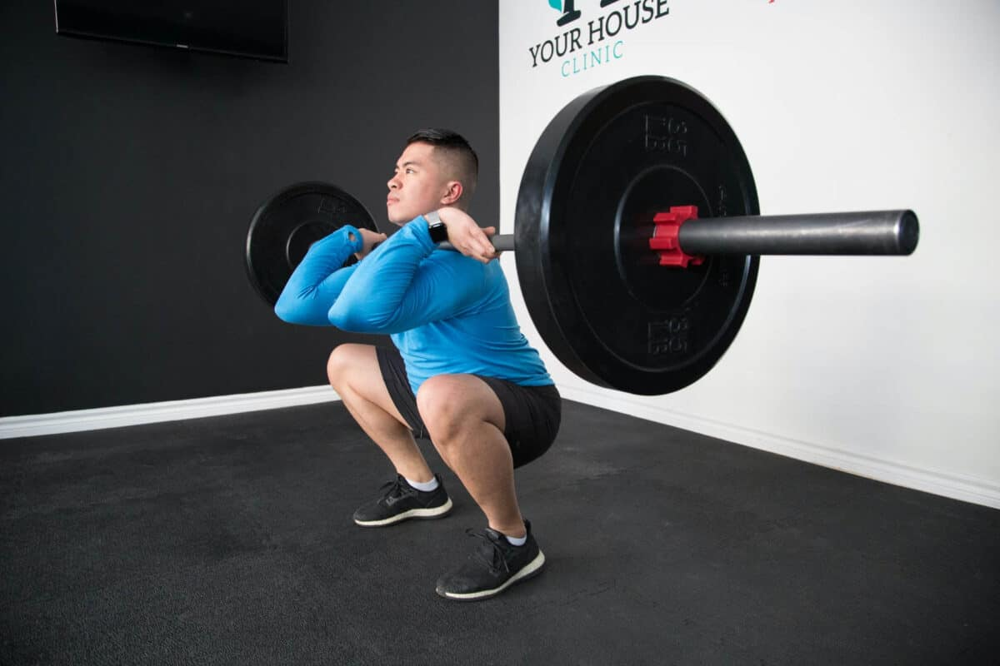
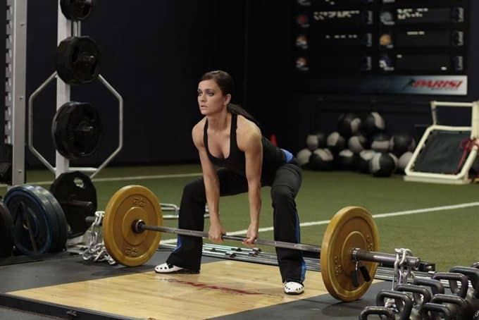

MOVIMIENTOS
Ejercicio de sentadilla
Press de banca
Peso muerto o deadlift
Estos ejercicios se realizan en este orden y cada participante tiene 3 intentos en cada uno de ellos para realizar un levantamiento que sea considerado válido.Los mejores intentos válidos serán los que se cuenten en cada movimiento y todos ellos se suman a un total.Con el objetivo de determinar el/la mejor levantador/a de una forma objetiva, la IPF equipara el resultado obtenido respecto a su peso corporal y el total de los 3 levantamientos utilizando la fórmula de Wilks, estableciéndose así una puntuación que determine quién es el/la ganador/a del campeonato.

Ejercicio de sentadilla

Press de banca

Peso muerto o deadlift
CATEGORIAS
Modalidad - Sexo - Edad - Peso
Existen 2 modalidades de competición de powerlifting: clásico (raw) o equipado. La principal diferencia entre ambas modalidades es el material que se permite utilizar en cada una de ellas.En la categoría "raw" se permite el uso de cinturón, muñequeras y rodilleras.En la categoría "equipado" está permitido el uso de traje soportivo, camiseta soportiva y vendajes específicos que en la categoría raw o classi no se permiten.
Hombres y mujeres compiten en categorías diferentes.
La IPF establece la siguientes divisiones o categorías por edad pudiéndose adaptar por cada federación nacional:Absoluto o open: desde el día que se cumple 14 años en adelante (sin más limitaciones).
Sub-junior: desde el día que se cumple 14 años y hasta finalizar el año natural donde se cumpla 18 años.
Junior: desde el 1 de enero del año natural en el que cumpla 19 años y hasta finalizar el año natural en el
que cumpla 23 años.
Master I: desde el 1 de enero del año natural en el que cumpla 40 años y hasta finalizar el año natural en el
que cumpla 49 años.
Master II…IV: existen diferentes categorías máster en franjas de 10 años.
La última categorización se realiza en función del peso corporal, estableciéndose diferentes subdivisiones en hombres y mujeres:Hombres (en kg.): menos de 59, 66, 74, 83, 93, 105, 120 y más de 120.
Mujeres (en kg.): menos de 47, 52, 57, 63, 69, 72, 76, 84 y más de 84.